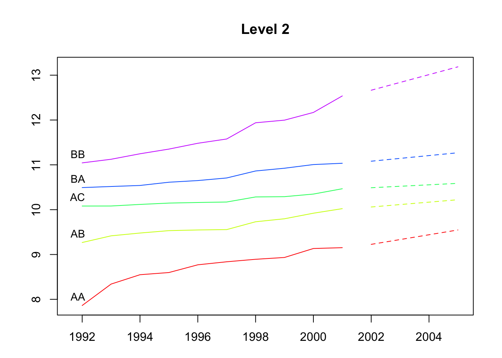
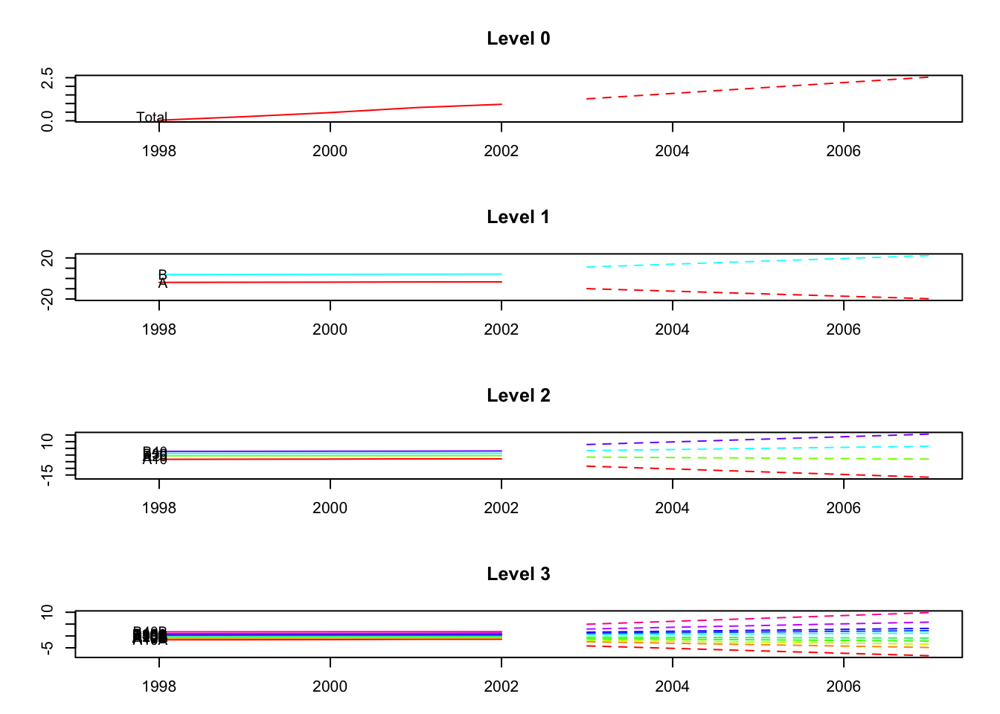

The R package hts presents functions to create, plot and forecast hierarchical and grouped time series.
Installation
You can install the stable version on R CRAN.
install.packages('hts', dependencies = TRUE)You can also install the development version from Github
# install.packages("devtools")
devtools::install_github("earowang/hts")Usage
Example 1: hierarchical time series
library(hts)
#> Loading required package: forecast
# hts example 1
print(htseg1)
#> Hierarchical Time Series
#> 3 Levels
#> Number of nodes at each level: 1 2 5
#> Total number of series: 8
#> Number of observations per series: 10
#> Top level series:
#> Time Series:
#> Start = 1992
#> End = 2001
#> Frequency = 1
#> [1] 48.74808 49.48047 49.93238 50.24070 50.60846 50.84851 51.70922
#> [8] 51.94330 52.57796 53.21496
summary(htseg1)
#> Hierarchical Time Series
#> 3 Levels
#> Number of nodes at each level: 1 2 5
#> Total number of series: 8
#> Number of observations per series: 10
#> Top level series:
#> Time Series:
#> Start = 1992
#> End = 2001
#> Frequency = 1
#> [1] 48.74808 49.48047 49.93238 50.24070 50.60846 50.84851 51.70922
#> [8] 51.94330 52.57796 53.21496
#>
#> Labels:
#> [1] "Level 0" "Level 1" "Level 2"
aggts1 <- aggts(htseg1)
aggts2 <- aggts(htseg1, levels = 1)
aggts3 <- aggts(htseg1, levels = c(0, 2))
plot(htseg1, levels = 1)
smatrix(htseg1) # Return the dense mode
#> [,1] [,2] [,3] [,4] [,5]
#> [1,] 1 1 1 1 1
#> [2,] 1 1 1 0 0
#> [3,] 0 0 0 1 1
#> [4,] 1 0 0 0 0
#> [5,] 0 1 0 0 0
#> [6,] 0 0 1 0 0
#> [7,] 0 0 0 1 0
#> [8,] 0 0 0 0 1
# Forecasts
fcasts1.bu <- forecast(
htseg1, h = 4, method = "bu", fmethod = "ets", parallel = TRUE
)
aggts4 <- aggts(fcasts1.bu)
summary(fcasts1.bu)
#> Hierarchical Time Series
#> 3 Levels
#> Number of nodes at each level: 1 2 5
#> Total number of series: 8
#> Number of observations in each historical series: 10
#> Number of forecasts per series: 4
#> Top level series of forecasts:
#> Time Series:
#> Start = 2002
#> End = 2005
#> Frequency = 1
#> [1] 53.2149 53.2149 53.2149 53.2149
#>
#> Method: Bottom-up forecasts
#> Forecast method: ETS
fcasts1.td <- forecast(
htseg1, h = 4, method = "tdfp", fmethod = "arima", keep.fitted = TRUE
)
summary(fcasts1.td) # When keep.fitted = TRUE, return in-sample accuracy
#> Hierarchical Time Series
#> 3 Levels
#> Number of nodes at each level: 1 2 5
#> Total number of series: 8
#> Number of observations in each historical series: 10
#> Number of forecasts per series: 4
#> Top level series of forecasts:
#> Time Series:
#> Start = 2002
#> End = 2005
#> Frequency = 1
#> [1] 53.71128 54.20760 54.70392 55.20024
#>
#> Method: Top-down forecasts using forecasts proportions
#> Forecast method: Arima
#> In-sample error measures at the bottom level:
#> AA AB AC BA BB
#> ME 0.0007719336 0.0009183738 0.001003812 0.001043247 0.001087807
#> RMSE 0.1298400018 0.0515879830 0.040306867 0.037462277 0.105015065
#> MAE 0.0978321731 0.0436089571 0.033210387 0.027003846 0.081906948
#> MAPE 1.1275970221 0.4534439625 0.323535559 0.251066115 0.691364891
#> MPE 0.0367879336 0.0069220593 0.006785872 0.007787895 -0.011087494
#> MASE 0.6825678136 0.5197483057 0.774250880 0.447950006 0.493684443
fcasts1.comb <- forecast(
htseg1, h = 4, method = "comb", fmethod = "ets", keep.fitted = TRUE
)
aggts4 <- aggts(fcasts1.comb)
plot(fcasts1.comb, levels = 2)
plot(fcasts1.comb, include = 5, levels = c(1, 2))
Example 2: hierarchical time series
# hts example 2
data <- window(htseg2, start = 1992, end = 2002)
test <- window(htseg2, start = 2003)
fcasts2.mo <- forecast(
data, h = 5, method = "mo", fmethod = "ets", level = 1,
keep.fitted = TRUE, keep.resid = TRUE
)
accuracy.gts(fcasts2.mo, test)
#> Total A B A10 A20 B30
#> ME -0.1794783 -0.2486428 0.06916451 -0.1954860 -0.05315684 -0.02399186
#> RMSE 0.1818643 0.2732218 0.13585344 0.2180641 0.05572214 0.03144802
#> MAE 0.1794783 0.2486428 0.11251209 0.1954860 0.05315684 0.02399186
#> MAPE 11.1268019 8.4004312 2.27814495 7.5371465 14.49009308 1.69936058
#> MPE -11.1268019 8.4004312 1.30221674 7.5371465 14.49009308 -1.69936058
#> MASE 0.5663497 1.3950200 0.81137939 1.2966219 1.93505737 0.52639468
#> B40 A10A A10B A10C A20A
#> ME 0.09315637 -0.03774880 -0.1649411 0.007203920 -0.04105604
#> RMSE 0.16498366 0.05205754 0.1779641 0.012753680 0.04696434
#> MAE 0.13636607 0.03873088 0.1649411 0.009838328 0.04105604
#> MAPE 3.85101876 3.11436103 20.5656022 1.774154141 13.39804861
#> MPE 2.45900161 3.04078646 20.5656022 -1.351777719 13.39804861
#> MASE 1.46488456 0.36661690 5.1038016 0.768361455 3.23432001
#> A20B B30A B30B B30C B40A B40B
#> ME -0.01210080 -0.05065830 0.01324339 0.01342306 -0.0495926 0.1427490
#> RMSE 0.01432307 0.05944454 0.01485743 0.01599316 0.0728362 0.2349335
#> MAE 0.01228684 0.05065830 0.01324339 0.01342306 0.0495926 0.1800119
#> MAPE 15.88898042 16.89941739 2.89472660 2.07537753 3.6008092 8.1543683
#> MPE 15.22048749 -16.89941739 2.89472660 2.07537753 -3.6008092 6.1053561
#> MASE 0.83150955 2.07454397 1.47284424 1.10323688 0.9554614 4.3707453
accuracy.gts(fcasts2.mo, test, levels = 1)
#> A B
#> ME -0.2486428 0.06916451
#> RMSE 0.2732218 0.13585344
#> MAE 0.2486428 0.11251209
#> MAPE 8.4004312 2.27814495
#> MPE 8.4004312 1.30221674
#> MASE 1.3950200 0.81137939
fcasts2.td <- forecast(
data, h = 5, method = "tdgsa", fmethod = "ets",
keep.fitted = TRUE, keep.resid = TRUE
)
plot(fcasts2.td, include = 5)
plot(fcasts2.td, include = 5, levels = c(0, 2))
Example 3: grouped time series
# gts example
plot(infantgts, levels = 1)
fcasts3.comb <- forecast(infantgts, h = 4, method = "comb", fmethod = "ets")
agg_gts1 <- aggts(fcasts3.comb, levels = 1)
agg_gts2 <- aggts(fcasts3.comb, levels = 1, forecasts = FALSE)
plot(fcasts3.comb)
plot(fcasts3.comb, include = 5, levels = c(1, 2))
fcasts3.combsd <- forecast(
infantgts, h = 4, method = "comb", fmethod = "ets",
weights = "sd", keep.fitted = TRUE
)
fcasts3.combn <- forecast(
infantgts, h = 4, method = "comb", fmethod = "ets",
weights = "nseries", keep.resid = TRUE
)